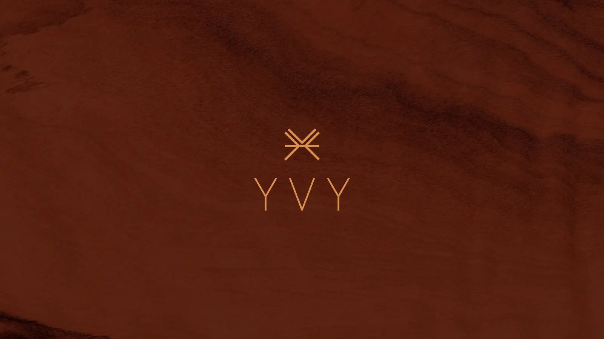
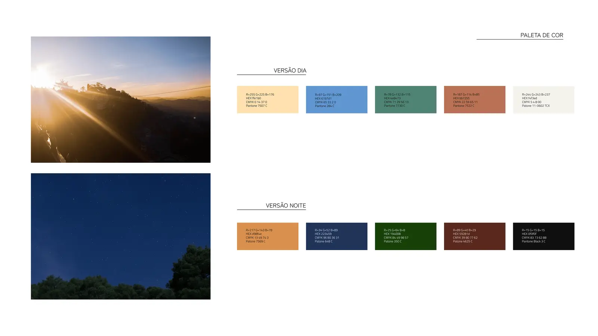
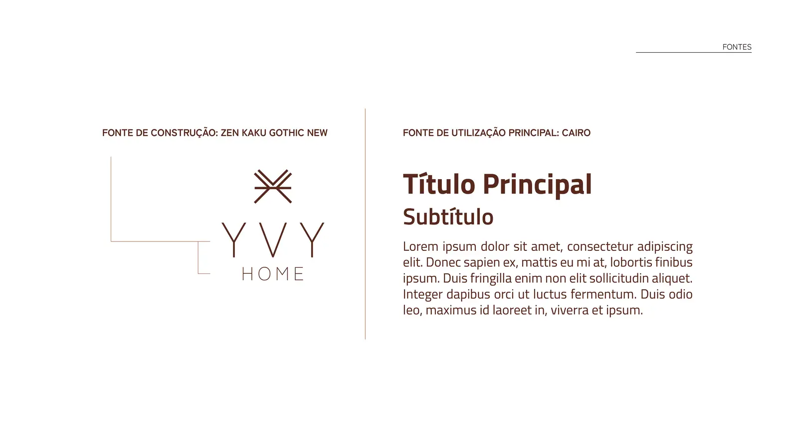
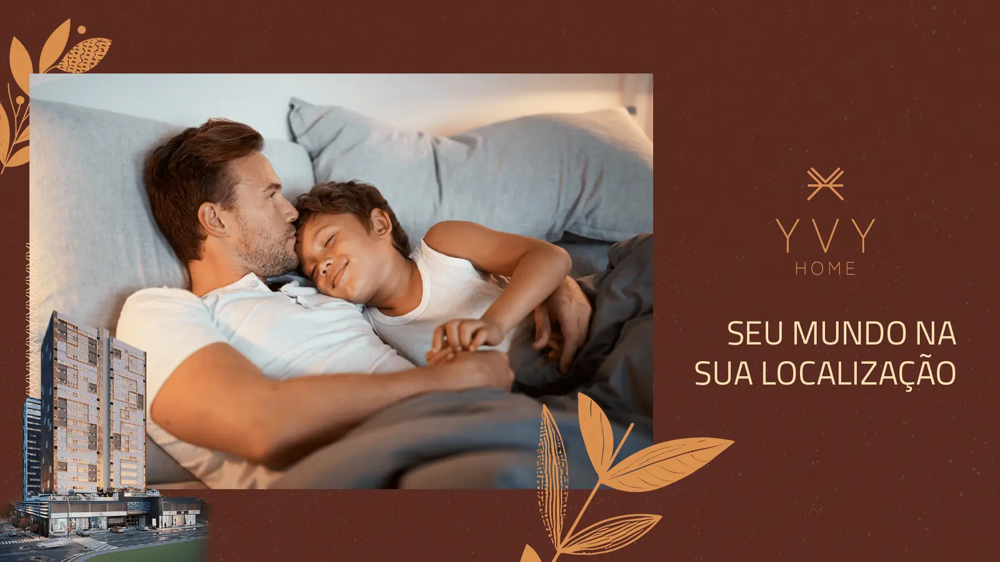
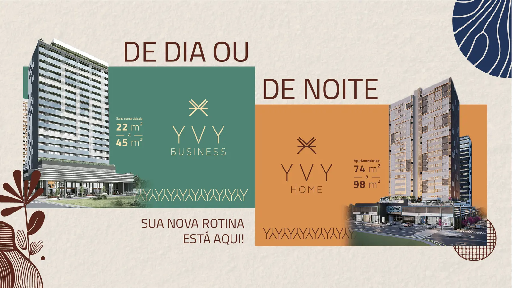

Lançamento imobiliário
YVY

Desenvolvido a partir da herança cultural dos povos indígenas Guarani, o nome “Yvy”, que em tupi significa “terra” ou “mundo”, vai além da referência ao solo. É o espaço onde a vida floresce e onde a terra e seus habitantes coexistem em harmonia, refletindo a conexão entre pessoas, natureza e culturas.
Lançamento da Construtora Dinâmica em comemoração aos seus 25 anos, o YVY integra moradia, trabalho, lazer e comércio em uma experiência completa e equilibrada. Num mundo em que o tempo se tornou escasso, viver onde as necessidades se encontram é essencial.
A identidade reforça a ideia de um lugar em que descanso, trabalho e lazer fluem em sinergia com o entorno, conectando passado, presente e futuro em um só endereço.









